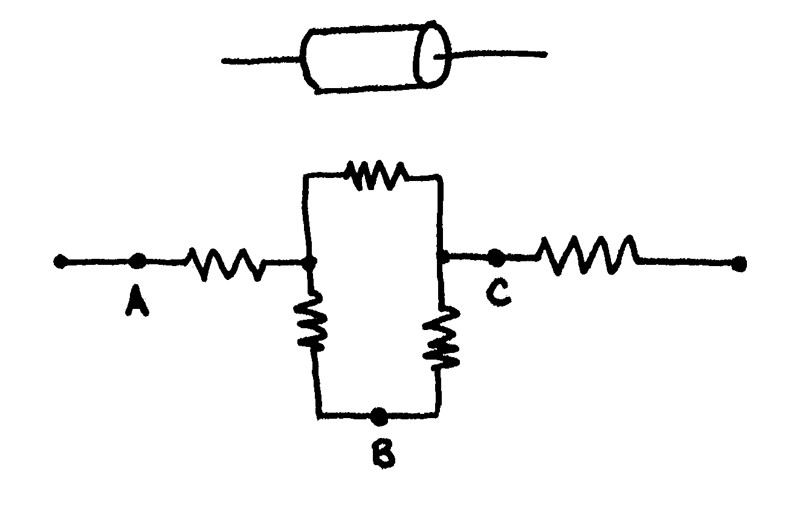
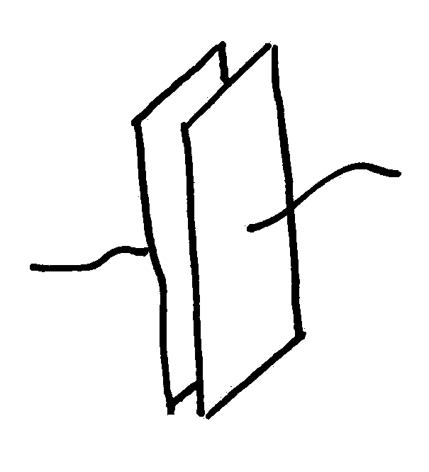
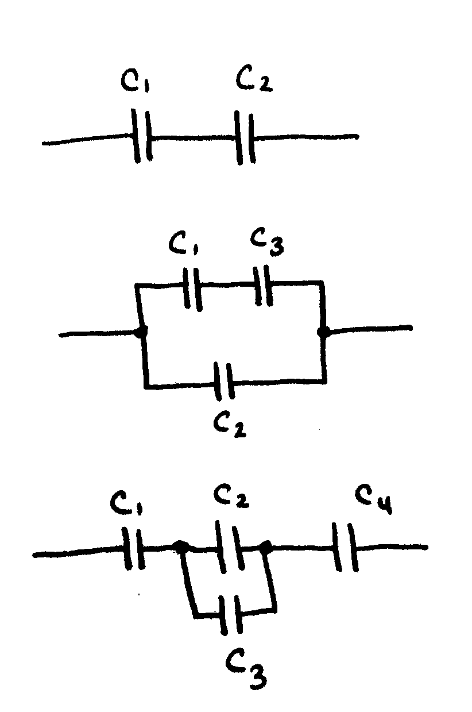
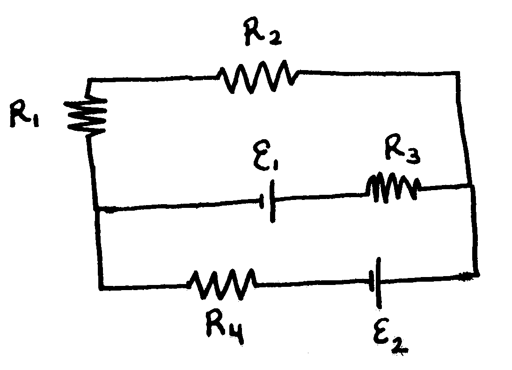
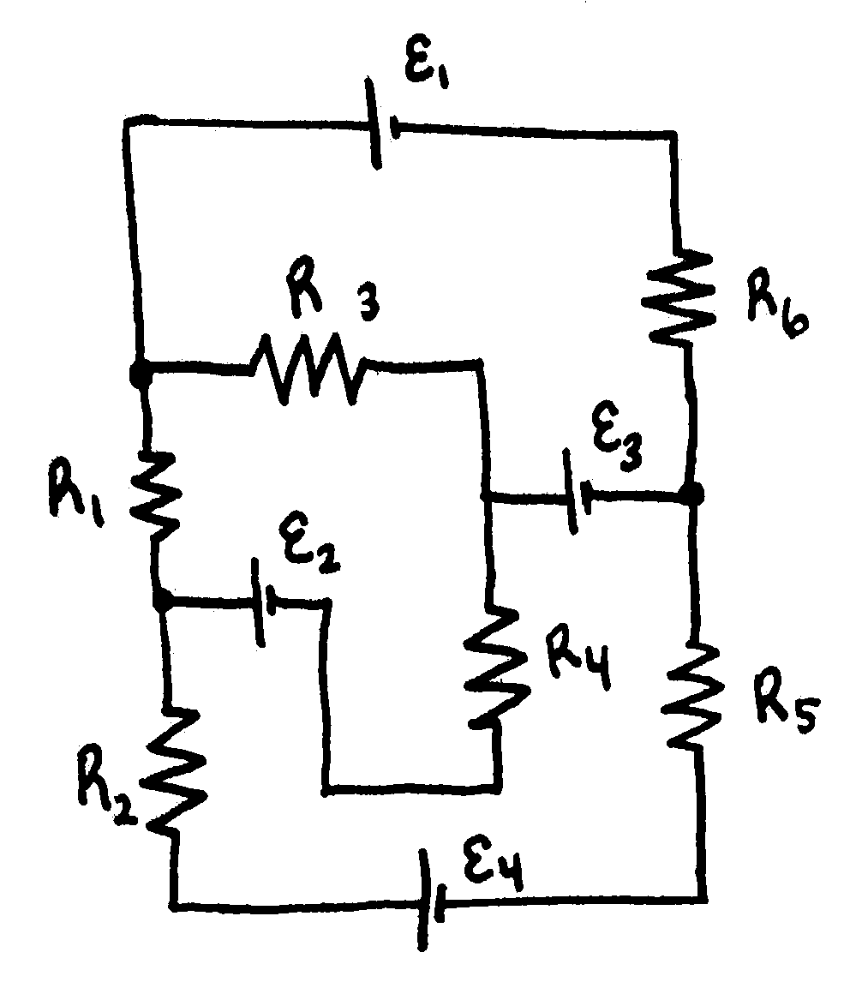
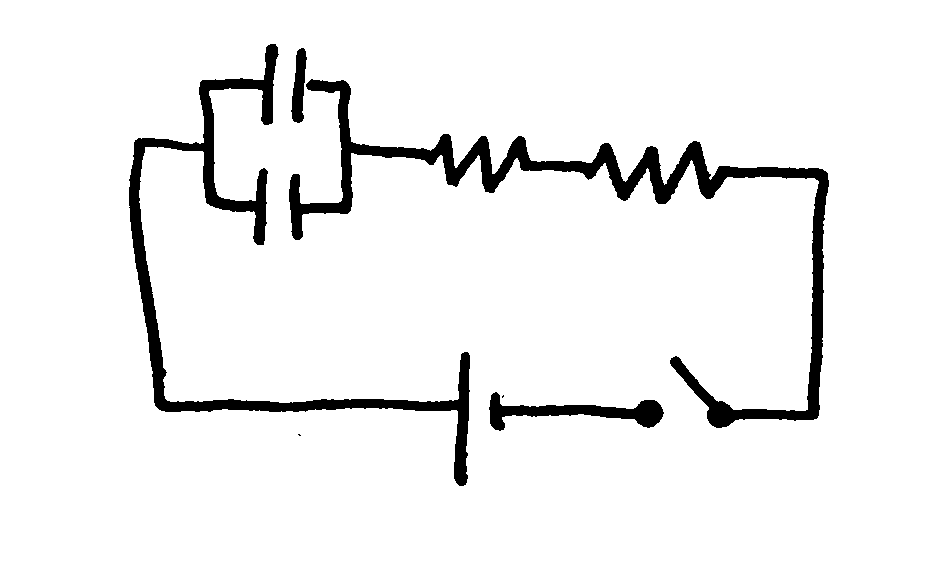

Phy222 Practice Exam2
Problem 1:
A resistor is constructed by forming a material of resistivity \(4.50~\Omega \cdot m\) into the shape of a cylinder. This cylinder has a length of \(3.5~cm\) and outer and radius of \(1.24~cm\). Multiple of these resistors are then configured as shown below:
- What is the resistance of the cylinder?
- How much energy is delivered to a single resistor when connected to a 1.5V AA battery for 5 seconds?
- What is the equivalent resistance of the circuit?
- what is the equivalent resistance if another resistor was placed between points A and B/
- what is the equivalent resistance if a wire were placed between A and C?

Problem 2:
A capacitor is created from two sheets of metal which measure \(0.1~m\) on each side. One sheet is then charged with\(300 \mu C\) of charge and the other with \(- 300\mu C\) of charge.
- Calculate the voltage across the capacitor if the plates are separated by \(1~mm\)
- Calculate the voltage across the capacitor if the plates are separated by \(1~\mu m\)
- Calculate the voltage if a plastic film dielectric with \(\kappa = 5.5\) and thickness of \(1~\mu m\) is sandwiched between the plates.

Problem 3:
Capacitors are set up in the below arrangements with \(C_1=10\mu C\), \(C_2=20\mu C\), \(C_3=15\mu C\), and \(C_4=5\mu C\).
- Calculate the equivalent capacitance of each circuit
- Calculate the voltage and charge on each capacitor

Problem 4:
Two circuits are shown below
- Pick a direction for currents and loops in each circuit.
- Write Kirkhoffs junction and loop laws for the circuit. note: I will not ask you to solve the equations during the exam. Pay careful attention to plus and minus signs.


Problem 5:
A circuit is created by placing a capacitors and resistors in the circuit shown below. Each capacitor has \(C=10~ \mu F\) and each resistor has \(R=10k \Omega\).
- Calculate the time constant for the circuit
- Find the charge on each individual capacitor after 0.15 seconds
- Find the current flowing thru the capacitor after 0.15 seconds
- Find the current flowing thru the resistor after 0.15 seconds
